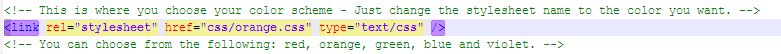
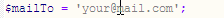

Created (v1.0): 08/02/2010
By: Bluz
Email: bluz.designer@gmail.com
Thank you for purchasing my theme. If you have any questions that are beyond the scope of this help file, please feel free to email via my user page contact form here. Thanks so much!
The Index.html
tag has an id of #home-page. every other page has an id of #sub-page.There are three css files necessary for customization.
The style.css file is separated into sections:
/** General Layout **/
/** Typography **/
/** Header **/
/** Slider **/
/** Page-Name **/
/** Content **/
/** Main-Colum **/
/** Sidebar **/
/** Portfolio **/
/** Blog **/
/** Comments **/
/** Contact us Form **/
/** Footer **/
NOTE: If you would like to edit a specific section of the site, simply find the appropriate label in the CSS file, and then scroll down until you find the appropriate style that needs to be edited. There are still some css files not noted above. I did not include them because you don't have to modify them. The 3 files above are enough to make the changes you need.
I also have a extra 5 css styles in diffrent colors to easily change the color scheme of the layout.
just look for this line inside the "head" tag:

and simply change the "css/orange.css" to any of the other color styles.
Your options are - orange, blue, red, green, violet.
This theme imports 14 Javascript files. All located in the "js" folder.
The PSD folder contains sliced psd files for both skins. In total there are 5 psd files:
If you'd like to change the logo, open "logo.psd", make the necessary adjustments, and then save the file as "logo.png".
open the "sendemail.php", find this line and change it your email adress:

I've used the following images, icons or other files as listed.
The font in the titles and in the logo is Delicious.
Once again, thank you so much for purchasing this theme. As I said at the beginning, I'd be glad to help you if you have any questions relating to this theme. No guarantees, but I'll do my best to assist. If you have a more general question relating to the themes on ThemeForest, you might consider visiting the forums and asking your question in the "Item Discussion" section.
Bluz (Paz Aricha)